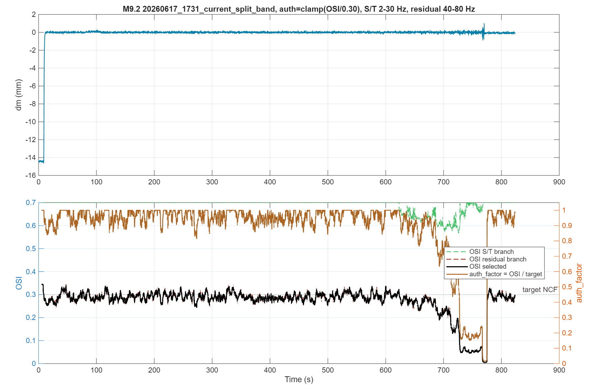
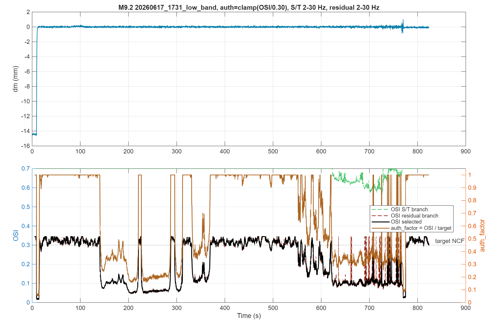
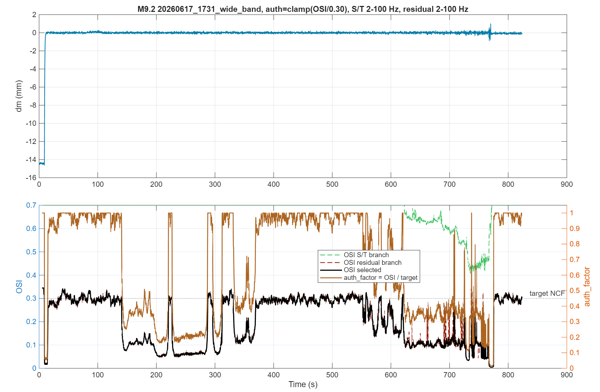
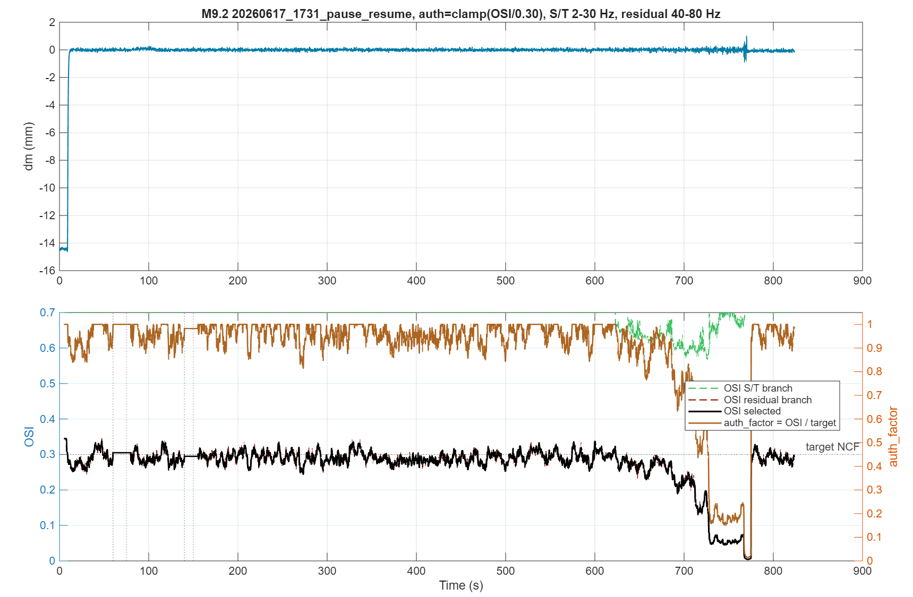
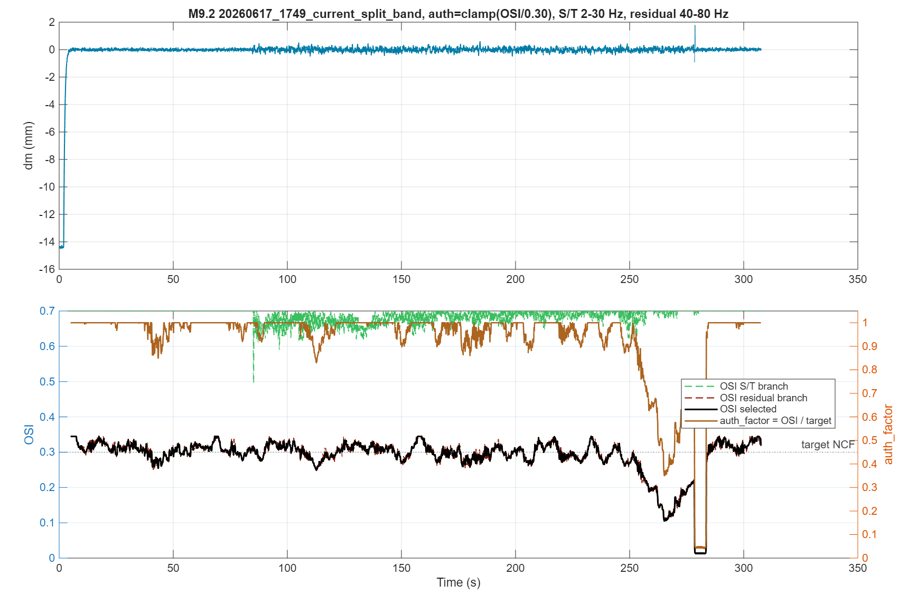
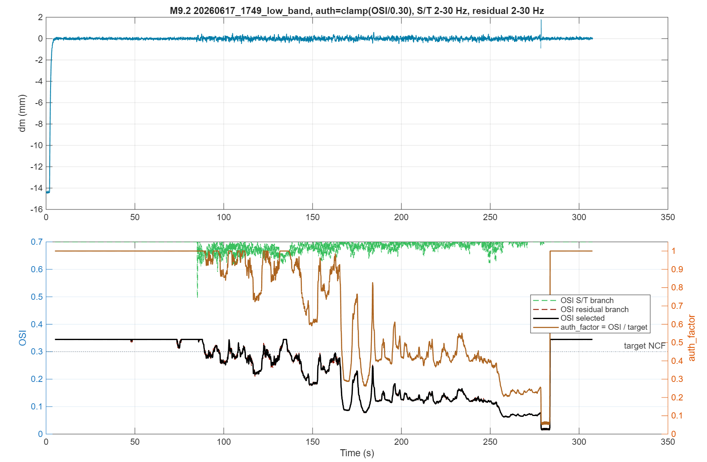
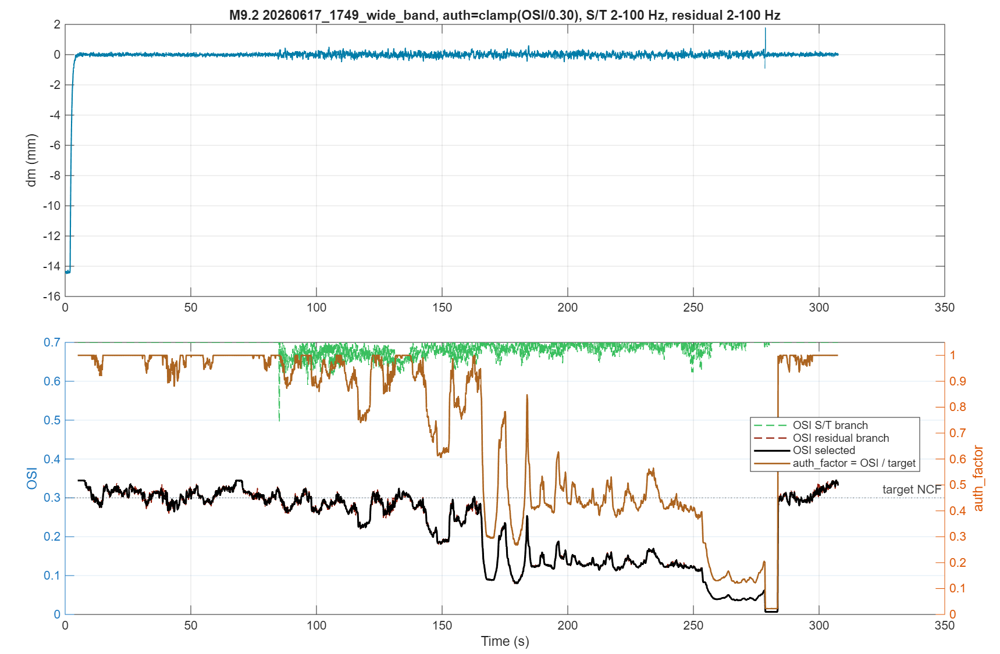
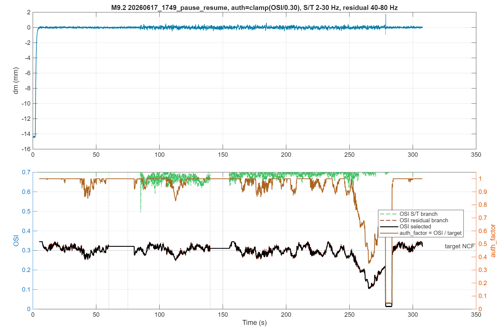

20260617_1731_current_split_band
PNG export
Research-only simplified trial. Authority is calculated directly from the selected OSI as auth_factor = clamp(OSI / target_ncf, 0, 1). Target NCF is required and is 0.3 in this run.
| Case | Windows | Paused | Min OSI | Mean OSI | Min auth | Mean auth | Final auth |
|---|---|---|---|---|---|---|---|
| 20260617_1731_current_split_band | 16435 | 0 | 0.0044 | 0.2708 | 0.0146 | 0.8938 | 0.9843 |
| 20260617_1731_low_band | 16435 | 0 | 0.0160 | 0.2137 | 0.0535 | 0.6791 | 1.0000 |
| 20260617_1731_wide_band | 16435 | 0 | 0.0046 | 0.2015 | 0.0153 | 0.6646 | 1.0000 |
| 20260617_1731_pause_resume | 16435 | 702 | 0.0044 | 0.2714 | 0.0146 | 0.8957 | 0.9843 |
| 20260617_1749_current_split_band | 6075 | 0 | 0.0124 | 0.2891 | 0.0412 | 0.9324 | 1.0000 |
| 20260617_1749_low_band | 6075 | 0 | 0.0155 | 0.2347 | 0.0517 | 0.7273 | 1.0000 |
| 20260617_1749_wide_band | 6075 | 0 | 0.0068 | 0.2210 | 0.0227 | 0.7210 | 1.0000 |
| 20260617_1749_pause_resume | 6075 | 702 | 0.0124 | 0.2903 | 0.0412 | 0.9337 | 1.0000 |







